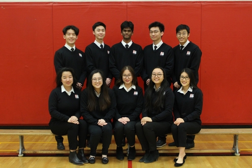

The Bayview S. S. Prefects Organization

The Bayview S.S. Prefects Organization is a student-led program that requires a senior student that achieves an unsolicited teacher recommendation to be considered as a member. With YRDSB staff, Prefects at Bayview S.S. represent over 1700 students during school and district-wide events such as Parent Teacher Nights, University/College Fairs, etc.
As the external secretary to an 80+ member organization, I led some of the best students my high school had to offer in official school events. Not only did I ensure my group of young professionals were completing their tasks, but I also organized events on behalf of my school such as Grade 9 Day, Grade 8 Day, OSSLT, and many others.